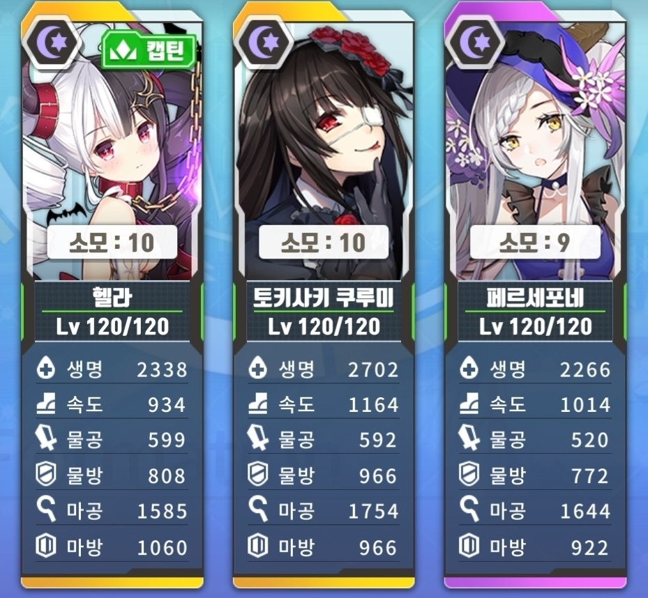
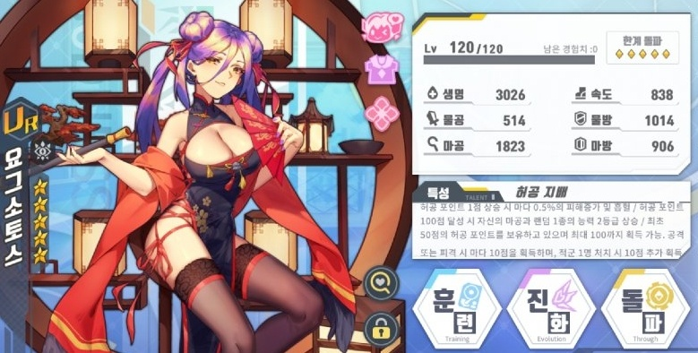
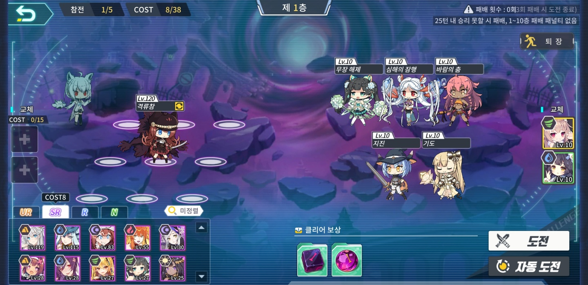
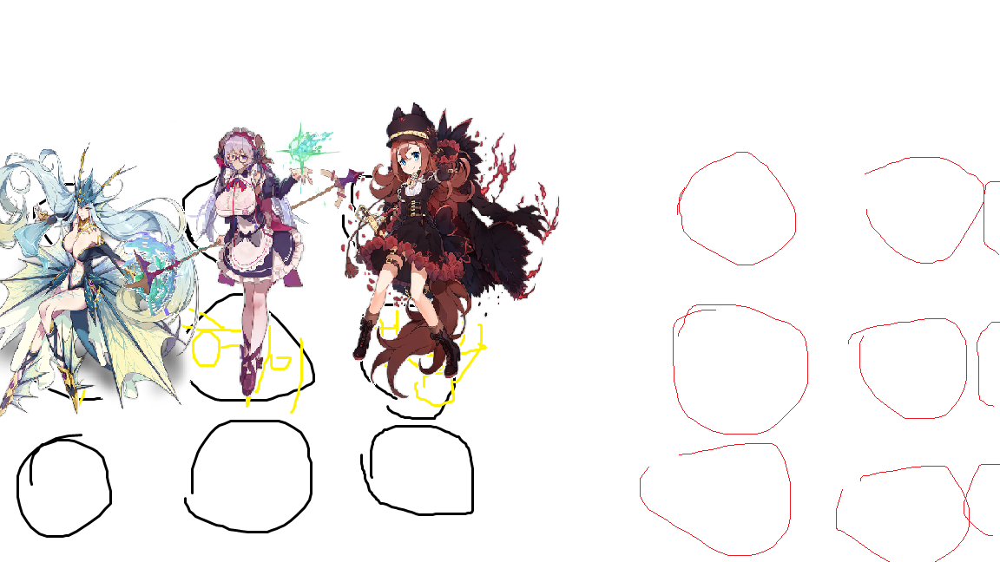
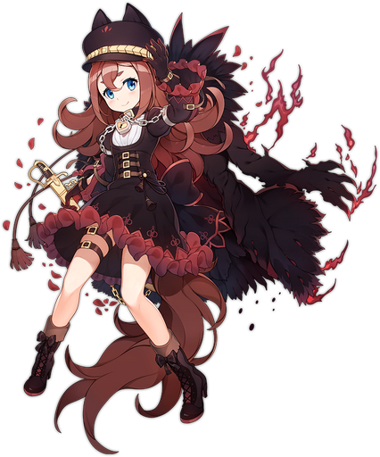
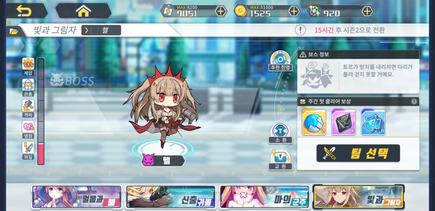
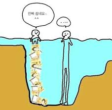
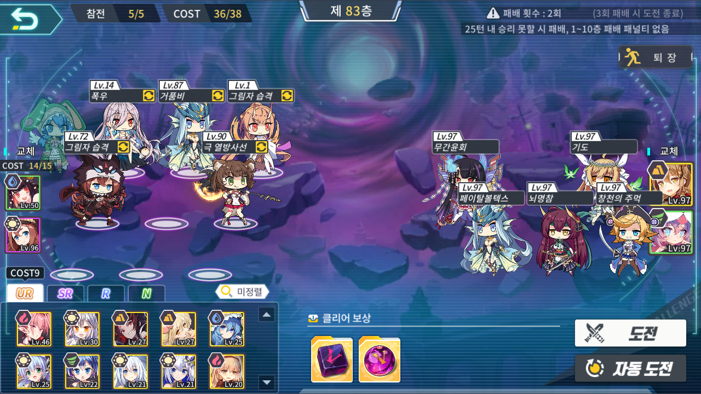

은열쇠의 문 공략
일단 들어가기에 앞서 은열쇠가 무엇인지보다는 내가 왜 이걸해야하는지 그 이유가 명확해야지
하고싶은 마음이 들으실꺼 같기에
왜 은열쇠를 해야하는지 제가 설명하도록 하겠습니다.
자 일단 은열쇠를 왜 해야하나, 그것은 바로 현 암덱

이것이(지금 신앙을 뺀게있어서 마공이 낮음..) 한섭 최고 스테이지(2020년3월 기준)10-4스테이지를 앵간해서는 전복없이 오토로 무난하게 돌아가는 덱입니다.
3마리 110랩 넘어가면 되고요 속도도 높고 마공도 높아야해요. 아그냥 3마리 스펙을 겁나 높여야한다 생각해주시길 바랍니다.
그런데 이 요그소토스라는 서령 한마리면 10-4가 혼자서도 돌아갑니다.

이정도 스펙의 요그소토스면 10판중 3~4판정도 빼고는 다 성공합니다.
그런 사기서령을 얻을수 있는곳이 바로 은열쇠의 문이기 때문에 80층 이상을 깨셔서 요그소토스를 얻어야 하는것입니다.
각설하고 그렇다면 은열쇠를 시작해 보도록 하겠습니다. 은열쇠는

이런 바둑돌 판에 자신의 서령을 배치해서
무조건 자동전투로밖에 싸울수없는 방주지령에서 유일하게 재밌는 컨텐츠입니다.
그러니깐 젭알
노오오오력이 부족하다 좀 노력은 먼저하고 물어보자.모처럼 공략이니 성심성의껏 도와드리겠습니다 ^^?
『1~20층 공략법』 이건진짜 은열쇠 핵심코어 하나도 안넣고 조금만 생각해도 술술 깰수있다. 제발 이정도는 혼자 깨주세요ㅠㅠ..
『20~39층 공략법』 여기도 진짜 엄청쉬워요!

빛댕이 헤이드룬 레비 이렇게 하기만해도 충분함!!
뉴비쟝: 저기여 잠깐만요
이즈나: 네 뉴비쟝님 말씀하세요
<ㅡㅡㅡ 이게빛댕이
뉴비쟝: 빛댕이가 뭐에요?
이즈나: 아 그건

이 환령전당이라는 컨텐츠에서 2주마다 로테이션이 돌아가는 1시즌 2시즌이란게 있는데 그 시즌중 1시즌헬을 위 4마리다 클리어하면 얻을수있는 얻기쉬운 캐릭터입니다 ㅎㅎ
뉴비쟝: 아 진짜요?? (대충 못믿겠는 이모티콘)
감사합니다!!
잠시후...
뉴비쟝: 저기요 거 함만 나와봐요
이거 베히모스 아무리해도 안깨지는데요? 아까 쉽다하지 않았나요?
<어디를 둘러봐도 이즈나는 보이지 않았다.>
뉴비쟝:!@#$!@#$!@#$!@#!@#%!@#$!#$!$!@#%
길 마나와!!!!!!!!!!
(이 이야기는 픽션입니다 말랑말랑은 언제나 평화롭고 화목한 가
족같은 분위기를 형성하고 있어요 ㅎㅎ)
뉴비쟝: 안되겠다.
흑우On! (음머어어어어ㅓㅓㅓㅓ)

뉴비쟝: 후 드뎌 얻었다 헿,,
이렇게 우여곡질 끝에 빛댕이를 얻었다면 성공하신겁니다! 자자 계속해서 은열쇠 공략으로 넘어가볼께요!!
『40~81층 공략법』 빛댕이 얻으신것처럼 이쯤에서 슬슬 환령전당 시즌1에서 불쥐 얻어주시고 해보시다가 못깨시겠으면 부담갖지마시고 길드톡방에 층수 사진올려주시고 이거 어떻게 깨야할까 물어봐 주세요!!
아그리고 1층부터 81층중 특별히 어려운 층수는 공략 해둘께요~
****추가준비중****
『82층 공략법』 축하합니다. 첫번째 헬게이트에 도착하셨습니다. 일단 레밸은 같지 않아도 운만좋으면 더 쪼랩때 깰수있고 운나쁘면 더 스펙업 해야 깰수도 있으니 배치만 참고해주세요
 아잠만 저기 왜 암댕이가 들어가있어 참고하지 말아주세요 ㅋㅋㅋ;;;
이 사진의 주인은 82층을 클리어하는데 무려 3일이나 걸렸습니다.
아주 운나쁜 경우이고 처녀자리가 없는 찐따라서 더힘들었습니다. 솔직히 처녀자리만 있었으면 더 빨리 100층까지 밀어버렸을꺼같은데..
추억팔이는 그만하고 82층 클리어샷 몇개 보여주고 다음으로 넘어갈께요!